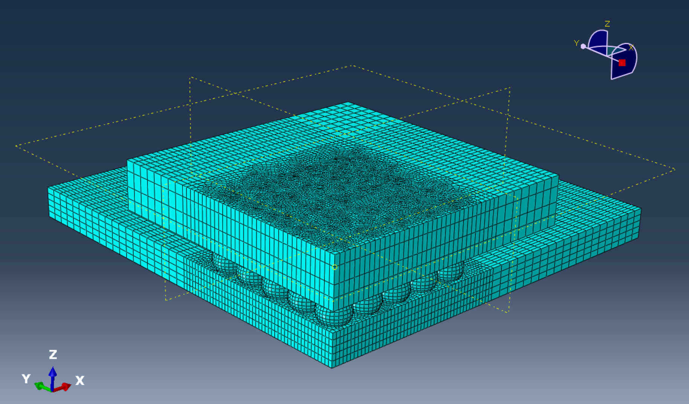
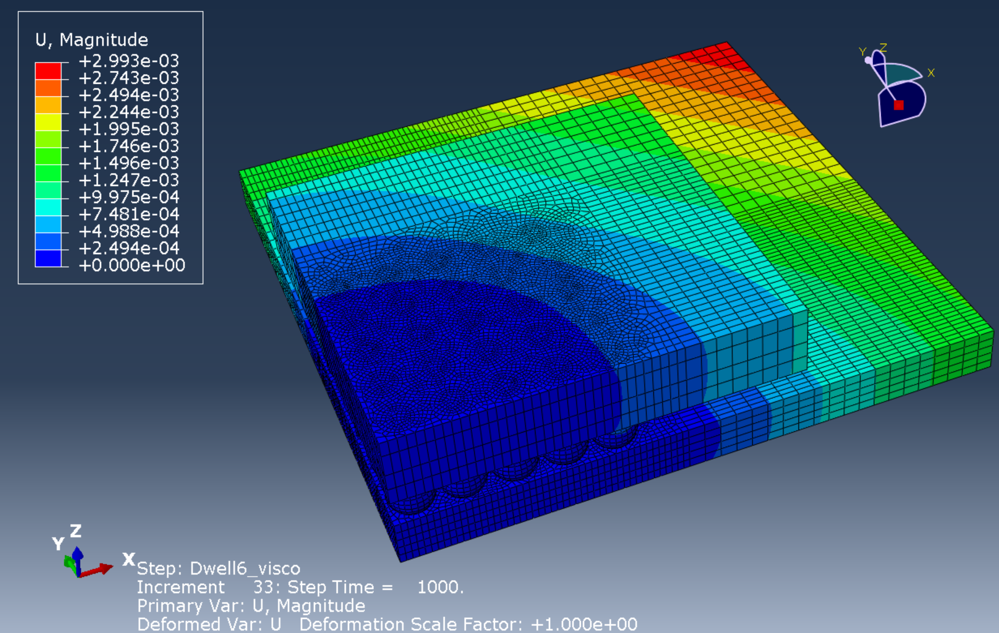
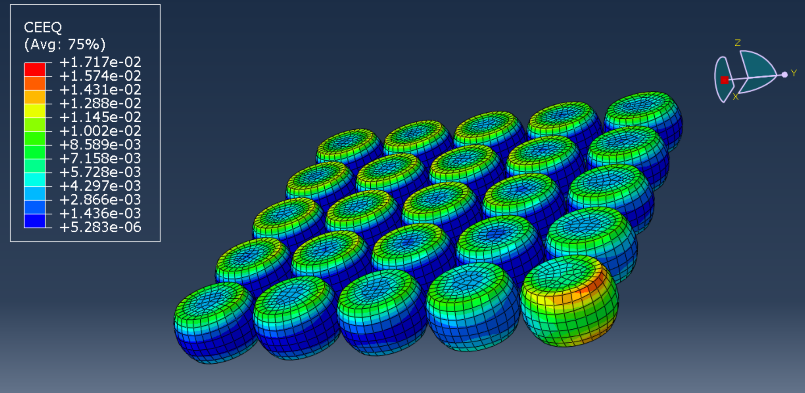
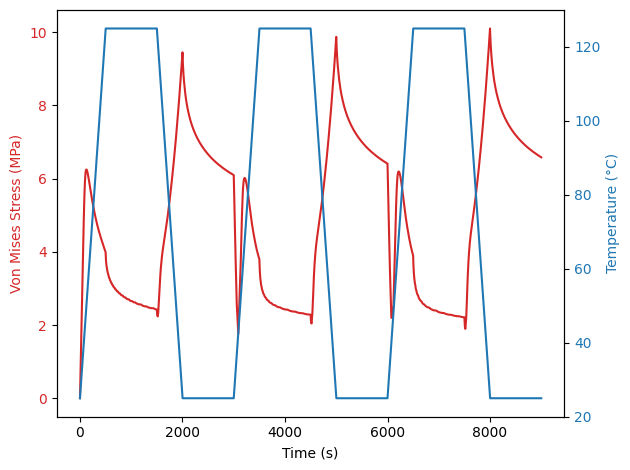
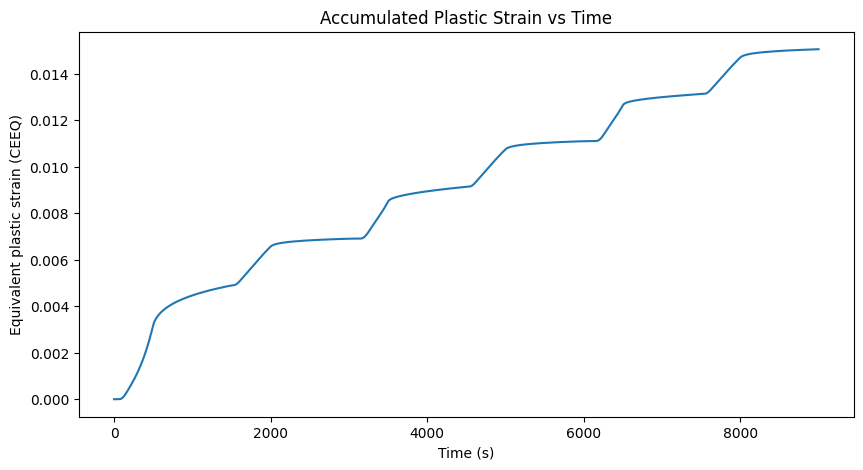

BGA Solder Joint Creep & Fatigue Life Simulation
Project Overview
This project involved a Finite Element Analysis (FEA) study of the thermo-mechanical reliability of Sn-0.3Ag-0.7Cu-3Bi (SAC0307-3Bi) lead-free solder joints in a Ball Grid Array (BGA) package subjected to thermal cycling between 25 °C and 125 °C. The Bismuth-doped, low-silver SAC alloy is an emerging cost-effective alternative to conventional SAC305 — Bi atoms induce solid solution strengthening in the β-Sn matrix, compensating for the reduced Ag content — but its creep–fatigue behaviour under thermo-mechanical coupling had not been fully characterised. The work addressed this gap through two main steps: (1) calibration of the nine Anand viscoplastic constitutive parameters for SAC0307-3Bi via the Norton creep law and virtual constant-strain-rate tensile simulations, and (2) a 3D quarter-symmetric FE model to simulate stress evolution, creep accumulation, and fatigue life under repeated thermal cycling, with life estimated using the Syed model.
Methodology
- Geometry & Mesh: A 3D quarter-symmetric finite element model of a standard TOPLINE BGA package was constructed in Abaqus 2022. The assembly comprises five components — silicon die (7 × 7 × 0.28 mm), BT substrate (10 × 10 × 0.42 mm), epoxy mould compound (10 × 10 × 0.47 mm), PCB substrate (15 × 15 × 0.57 mm), and SAC0307-3Bi solder balls (diameter 0.46 mm, standoff height 0.34 mm, pitch 0.60 mm). Symmetry boundary conditions were enforced on the X = 0 plane (U1 = 0) and Y = 0 plane (U2 = 0), with a single-point Z-constraint (U3 = 0) at the PCB centre node to eliminate rigid-body motion while allowing free thermal expansion in all unconstrained directions. C3D8R elements (8-node linear hexahedral, reduced integration) were used throughout, with local mesh refinement applied to the outermost corner solder joints — which carry the highest Distance-to-Neutral-Point (DNP) loading — giving a total of 78,054 elements.
- Anand Viscoplastic Constitutive Model & Parameter Calibration: Because solder joints operate at a high homologous temperature (T/Tm > 0.5), their mechanical response is dominated by time-dependent creep. The Anand unified viscoplastic model, which uses a single internal state variable s representing deformation resistance and requires no explicit yield surface, was adopted for the SAC0307-3Bi solder. Its nine parameters were obtained from Liu J, Saad AA, Zheng Y, Ji H, Bachok Z. Anand Model and Finite Element Analysis of Sn-0.3Ag-0.7Cu-3Bi Lead-Free Solder Joints in BGA Packages. Materials. 2026; 19(3):636.
The PCB, BT substrate, silicon die, and mould compound were modelled as isotropic linear elastic materials (material properties: solder E = 50 GPa, ν = 0.3, CTE = 20×10⁻⁶ K⁻¹; silicon E = 131 GPa; PCB E = 22 GPa, CTE = 18×10⁻⁶ K⁻¹). The Visco quasi-static solver in Abaqus was used for the solder creep simulation.Parameter Physical Meaning Value Unit s₀ Initial deformation resistance 26.09 MPa Q/R Activation energy 8530 K A Pre-exponential factor 224,585 s⁻¹ ξ Stress coefficient 4.68 — m Strain rate sensitivity 0.1832 — h₀ Hardening constant 8850 MPa ŝ Saturation deformation resistance coefficient 35.52 MPa n Strain rate sensitivity of saturation value 0.036 — a Strain rate sensitivity of hardening 1.33 — - Thermal Cycling Load Profile: Three consecutive thermal cycles (25 °C → 125 °C → 25 °C) were applied as a uniform body temperature load. Each ramp was controlled at 0.2 °C/s (500 s per ramp); dwell times at both temperature extremes were set to 1000 s, giving a single cycle period of 3000 s and a total analysis time of 9000 s. Three cycles were simulated to allow the hysteresis loop to reach a stabilised state, consistent with the behaviour of low-melting-point SAC solders.
- Fatigue Life Prediction — Syed Model: Creep deformation was confirmed as the dominant damage mechanism. The Syed accumulated creep strain model was adopted: Nf = (C′ · εacc)⁻¹, where C′ = 0.0468 is the inverse creep ductility constant for standard SAC solder, and εacc is the equivalent creep strain accumulated per stabilised cycle. First-cycle data were excluded due to transient stress redistribution from the initial stress-free state; the arithmetic mean of the stable second and third cycle increments was taken, yielding εacc = 0.0040.

Fig 1. Quarter-symmetric mesh of the BGA assembly (78,054 C3D8R elements)

Fig 2. Plot showing the displacement at the end of 3 thermal cycles

Fig 3. Plot showing the creep strain in the solder balls at the end of 3 thermal cycles
Key Results
The global displacement contours revealed pronounced concave warpage during the high-temperature dwell (125 °C) due to CTE mismatch, while minimal deformation was observed at the low-temperature dwell (25 °C), close to the model's reference temperature. Across the solder array, both von Mises and Tresca equivalent stresses displayed a clear DNP dependence increasing radially from the centre toward the diagonal corners with the peak von Mises stress of 10.10 MPa concentrated at the chip-side interface of the outermost corner joint. Shear stress components S13 and S23 confirmed that multiaxial shear driven by CTE mismatch is the dominant loading mode.

Fig 1. Von-Mises equivalent stress is maximum for the corner solder ball and is located at the chip-side interface
Stresses were notably higher during the low-temperature dwell than at high temperature, because at 125 °C intense viscoplastic creep flow relaxes the accumulated thermal mismatch stress, whereas at 25 °C the reduced creep effect restricts stress relaxation, leaving high residual stresses locked in the joints. The equivalent creep strain history of the critical corner element exhibited a characteristic "step-wise" accumulation pattern — growing rapidly during the heating and cooling ramps, and plateauing during the isothermal dwells — confirming that the continuously changing temperature difference (and resulting differential thermal expansion) is the primary driver of inelastic deformation. The first cycle accumulated the largest creep increment (ε = 0.0069), with the total reaching 0.015 after three cycles.

Fig 2. Equivalent creep strain history for the critical corner element.
Substituting εacc = 0.00404 into the Syed model yielded a predicted thermal fatigue life of approximately 5281 thermal cycles for the SAC0307-3Bi corner solder joint under the 25–125 °C profile. These results provide a quantitative reliability benchmark for Bi-doped low-silver SAC interconnects and indicate that minimising both the frequency and duration of exposure to extreme low-temperature environments is an effective strategy to extend device service life.
Project Information
- Category FEA / Electronic Packaging Reliability
- Software Abaqus 2022
- Solder Alloy SAC0307-3Bi (Sn-0.3Ag-0.7Cu-3Bi)
- Constitutive Model Anand Viscoplasticity (9 parameters)
- Life Prediction Syed Accumulated Creep Strain Model
- Thermal Profile 25 °C to 125 °C, 3 cycles
- Predicted Life ~2239 thermal cycles
- Date March 2026